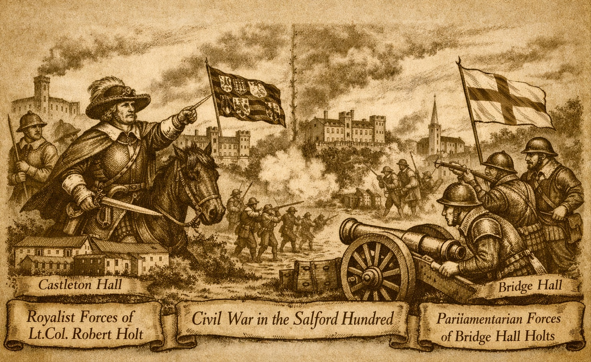

Civil War and Great Rebellion (1640-1660)

Salford Hundred
- Holt of Stubley (Puritan family) - Royalist Gentry Family
- Holt of Ashworth - Royalist Gentry Family
- Holt of Bridge Hall (Puritan Family) - Parliamentarian Gentry Family
The Holt family of Stubley Hall and Castleton Hall, prominent members of the Lancashire gentry, played a notable if ultimately qualified role in the Royalist cause during the Great Rebellion that convulsed England from 1640 onwards. Seated in the Rochdale area, with ancient manorial holdings that included Stubley’s ancient hall (complete with stables, barns, dovecote, water-mill, and over a hundred acres) and the “fayre mansion house” of Castleton built of freestone, the Holts were typical of the county’s lesser nobility: substantial landowners whose local influence rested on office-holding, kinship ties, and allegiance to powerful patrons such as the Stanley earls of Derby.
In 1640 Robert Holt of Castleton served as High Sheriff of Lancashire, an office that placed him at the centre of county affairs just as the political crisis between King and Parliament reached its climax. Closely associated with Lord Strange (soon to succeed as the 7th Earl of Derby), he was recommended by that ardent Royalist to take charge of the powder magazines in Manchester—an episode that helped spark the first armed clashes in the region. When open war came in 1642, Parliament acted swiftly against suspected Royalists: Robert Holt was removed from the commission of the peace and from the shrievalty he had held. Several Holts nevertheless declared for the King. Richard Holt of Stubley and Castleton joined the Royalist side with other local gentry, though many of that party made their peace with Parliament at an early date. Robert Holt of Stubley himself took up arms under Derby’s influence and served with the King’s forces in North Wales. Another kinsman, Richard Holt of Ashworth, fought in the defence of Lathom House (Derby’s great stronghold) before returning home ill; his estates were promptly sequestered and he was fined, after which he subscribed to the National Covenant and Negative Oath and took no further active part.
By the mid-1640s the Holt commitment to the Royalist war effort had largely run its course, reflecting the broader pattern among Lancashire’s gentry who, though many had initially ridden with Derby, found prolonged resistance unsustainable. Robert Holt of Stubley surrendered, compounded for his delinquency, and paid a substantial fine (recorded in contemporary accounts as £1,150). A lesser fine of £150 is also noted in family traditions for 1646, perhaps reflecting successive compositions or the sequestration of particular parcels of land. No evidence survives of direct Holt participation in the final Royalist campaigns of 1651—the Scottish invasion under Charles II that ended at Worcester—yet their earlier service, their financial contributions to the King’s cause, and their association with the Derby interest placed them firmly within the network that sustained the Royalist effort in the north-west until the Parliamentarian victory became irreversible.
During the Interregnum the family lived quietly on their diminished estates, surviving sequestration through the standard mechanisms of compounding and oath-taking. At the Restoration in 1660 Robert Holt re-emerged into public life, receiving a colonelcy in the Lancashire militia—an appointment that testified both to his earlier loyalty and to the crown’s willingness to rehabilitate former Royalists of good local standing.The Holts of Stubley and Castleton exemplify the Lancashire gentry’s complex navigation of the Great Rebellion: initially committed to the King under the powerful patronage of Derby, yet ultimately pragmatic in submission, thereby preserving their ancient seats and lineage through the storms of civil war.
The Civil War placed several branches of the Holt family at the centre of Lancashire’s political and economic upheavals. Richard Holt of Ashworth, a committed Royalist, was sequestrated early in the conflict and saw his income drastically reduced between 1642 and the Restoration, as reflected in the subsidy assessments. His position as a progressive landlord—he operated four fulling mills—meant that his losses also affected the local textile economy.
Another branch, the Holts of Bridge Hall, were deeply entangled in the county’s administrative world. Robert Holt of Bridge Hall served as an active county committee man in 1650–1651, at a time when the committee maintained unusually cooperative relations with the commissioners of the peace. Before the King’s execution, 61% of Lancashire committee men were also magistrates, and when the committees were reduced in size in 1650, Robert Holt was appointed a commissioner for Lancashire. Despite this prominence, the Bridge Hall line had been in debt since 1665 and eventually sold the estate in 1697 for £1,950 to their cousins, the Gaskells of Manchester.
The dispersal of Royalist estates after the war also brought another Holt into prominence. London investors rarely settled permanently on provincial land, yet the only Londoner to do so in Lancashire was Alexander Holt, himself of Lancashire descent. He purchased the sequestrated Shireburn estates, which remained in Holt hands into the eighteenth century, and he was closely related to the Holts of Gristlehurst. Of the lands belonging to 58 Lancashire delinquents, only 5% were acquired by their own tenants; among the Royalists dispossessed was Robert Holt of Stubley.
Across these branches, the Holts exemplify the wider pattern of Lancashire’s gentry: they led much of the county’s Civil War activity—whether Royalist or Parliamentarian—despite having little enthusiasm for conflict. Their experiences trace the full arc of the war in Lancashire: sequestration, committee service, estate sales, and the reshaping of gentry fortunes.
The royalists basic instrument of administration was the Commission of Array which was the revival of a mediaeval method. A Commission of Array was an old medieval mechanism that allowed the Crown to appoint local commissioners, raise troops on the king’s behalf and muster and organise the county militia. It dated back to a time before England had a standing army or modern administrative structures. Counties were expected to provide men for defence, and the Crown used these commissions to inspect (“array”) and mobilise them. When the Civil War broke out in 1642, Parliament and the King both claimed the right to control the militia. Parliament used the Militia Ordinance (passed without royal assent). Charles I rejected that and instead revived the Commission of Array, arguing it was the lawful, traditional method.
The Commission was representative of Lancashire leading Gentry. Justice of the Peace (JP) were chosen to
lend influence and credibility to the commission's activities. Robert Holt who was an Esquire, JP, had residence of
Salford was in the Commission.
There was a meeting in Warrington 21 October 1642 which was intended to create a mutual defence network. The attendees included:
- Robert Holt (Commissioner), status Esquire, residence Salford
- Richard Holt, status gentleman, residence Salford, had Trained Band experience. Trained Bands were the local county militias of early modern England. They were not professional soldiers but ordinary men, usually householders, who were required to attend periodic musters, practise basic weapons drill and serve in local defence if needed.
Richard Holt of Salford, gentlemen, Captain (1645 -6)
Robert Holt of Salford, Esquire, Lieutenant-Colonel, Wholly outside Lancashire.1648. Was a prisoner of war.
Sir Gilbert Gerrards regiment formed 1642 took part in Edgehill March And saw action at edge hill and Brentford. Gerard's foot was one of the best of Lancashire Royalist regiments. One of the officers was Ensign Robert Holt of Salford.
John Holt of Salford, Captain (1650-51)
Peter Holt of Salford Esquire, Captain
Ralph Ashton's regiment was raised largely in Salford 100 and was acknowledged to be one of the best in the country. This regiment was formed in December 1642. Peter Holt of Bury was a foot officer.
Lancashire’s Parliamentarian “financial officers” (1642–1651) were not a single office but a network of county committees, treasurers, sequestrators (these officers administered the estates of known Royalist), excise officers, and parish collectors responsible for raising assessments, seizing Royalist estates, managing excise, and funding the county’s regiments. Their work formed the financial backbone of Lancashire’s Parliamentarian war effort. Richard Holt of Birch is listed as a financial officer.
Rochdale Account of the Civil War
Robert Holt of Castleton (baptised in 1602) was a prominent staunch Royalist who played a significant civic and military role in Lancashire during the era of the English Civil War. His involvement progressed through several key stages:
- In 1639–40, Holt held the influential office of High Sheriff of Lancashire, responsible for making returns to the council regarding the collection of ship-money.
- In early 1641, acting as one of the King's Justices of the Peace, he and Edward Butterworth oversaw the taking of the Protestation of 1642 in Rochdale—a formal resolve to maintain the established religion and protect the King and Parliament.
- As conflict approached, Lord Strange proposed giving Holt charge of the “powder and match” magazines in 1642. He further signalled his allegiance by attending a banquet with Lord Derby in Manchester in July 1642 and serving as a collector for a Royalist subsidy of £8,700 in the Hundred of Salford that December.
- Because of his active support for the King, Parliament ordered him discharged from the commission of the peace on 24 October 1642.
- Following Parliamentarian victory in the region, Holt was forced to compound for his estates in 1646, paying a fine of £150 to prevent confiscation of his lands.
Following the return of the monarchy, Holt remained a figure of local authority:
- He held a colonelcy in one of the militia regiments.
- He served as a Deputy Lieutenant of the county. In this capacity, he received an official letter in 1663 warning him of potential uprisings by “Anabaptists, Independents, Presbyterians and many soldiers,” though the threat proved false.
The sources note that while more than one Robert Holt was engaged in the war, the records specifically identify the owner of Castleton Hall as the individual who took these decisive actions for the Royalist cause.
Identification of specific family members is complicated by the fact that several men named Robert Holt supported the King. While Robert Holt of Castleton is the most clearly documented, the wider Holt family also appears in the records:
- The Holts involved in the conflict generally fought on the side of the King. James Scolfeld—closely allied to the Holts through marriage and property—also suffered heavily for his loyalty.
-
Numerous Holts signed the Protestation shortly before the war, including:
- Francis, Roger, and Robert Holt in Castleton
- Jeremy, John, Samuel, and Edmund Holt in Hundersfield
- David, Thomas, and Alexander Holt in another division of Castleton
- Edward and John Holt in Butterworth
- Francis, John, and Jonathan Holt in Spotland
- Raphe and Peter Holt in another part of Spotland
- While families such as the Buckleys had members serving as Parliamentary officers (e.g., Lieutenant-Colonel John Buckley) or as members of the Presbyterian classis in 1646, no Holts appear among the Parliamentary supporters in these sources.
In summary, although multiple Holts supported the Royalist cause, the actions of Robert Holt of Castleton are the most clearly documented, while details of other individuals are obscured by overlapping names and limited surviving records.
The Lancashire Royalist Composition Papers are a multi volume set of 17th century records documenting how Royalists
in Lancashire negotiated fines (“compositions”) with the Parliamentarian Committee for Compounding after the English
Civil War. These fines allowed Royalists classified as “delinquents” to recover sequestered estates by admitting their
offence and paying an assessed sum. They are extracted from original records held in the Public Record Office
(now The National Archives) and were published by the Record Society of Lancashire and Cheshire between the late 19th
and early 20th centuries.
Robert Holt of Castleton read more.
Richard Holt of Ashworth read more.
Edward Holt of Sephton, gent read more.
The Parliamentarian and Royalist War Effort in Lancashire 1642 -1651, J.M. Gratton.
The Lancashire Gentry and the Great Rebellion 1640-60, B.G. Blackwood.
The History of the Parish of Rochdale, Henry Fishwick, 1889.
Royalist Composition papers Volume 3 Volume 29 RSLC, J H Stanning, 1896
Royalist Composition papers Volume 6 part 1 Volume 95 RSLC, J Brownbill, 1941